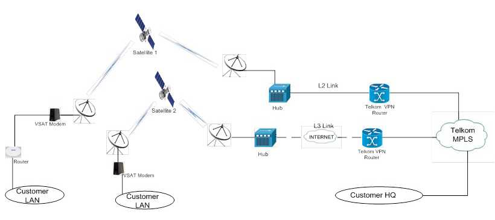

VSAT-VPN Setup Scenario
Satellite technology is independent from terrestrial infrastructure - unlike fibre, ADSL or mobile wireless technologies. Satellite broadband is available everywhere and makes even more sense in remote areas that other technologies cannot reach.
For the above scenario, on the customer side, LAN is configured according to customers specifications i.e. IP Subnets etc. The DHCP server is configured in the Hughes Modem and assigning the IPs to all the LAN devices. This option can be changed to customers specifications whereby the DHCP Server can be configured on the Customers router and NAT configured to the Hughes modem. The service is very flexible such that the client can choose their own LAN IPs/Subnets.Once the traffic gets to the Modem, its relayed to the Eutelsat space satellite; Yahsat-1B, then transmitted back to the hub earth stations located in London UK, and Torino Italy.
From the stations the traffic is transmitted in either or both two ways; i.e. via layer 2 link (Fibre) or a layer 3 IPSec tunnel to the customers remote network or his/her ISP. The ISP connects to the MPLS; whereby a point to point configuration can be done between the remote site router and the MPLS.
In the above scenario, though VPN traffic is transmitted to and from branch site to HQ, Internet traffic is generated from the Hub. A split tunnel is configured at hub whereby VPN traffic is from branch is put in a IPSec tunnel to Nairobi, whereas internet traffic is routed to the remote site. This makes internet browsing faster, since so many hops are eliminated in this split tunnel configuration.
The customer at remote site is able to access services from HQ office like Servers, Applications etc just as though they are connected directly to the same LAN.